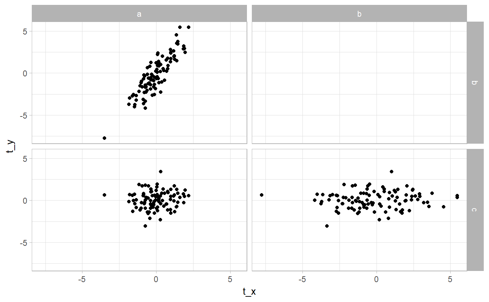
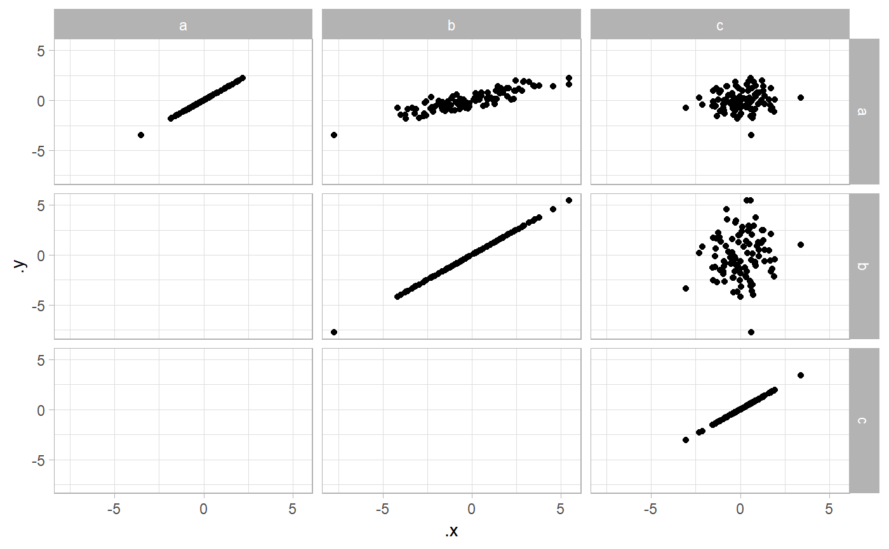
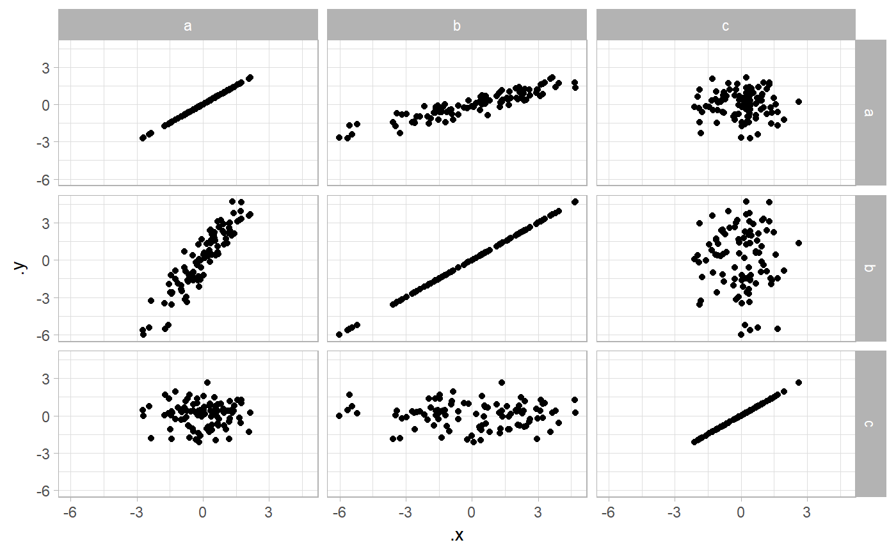
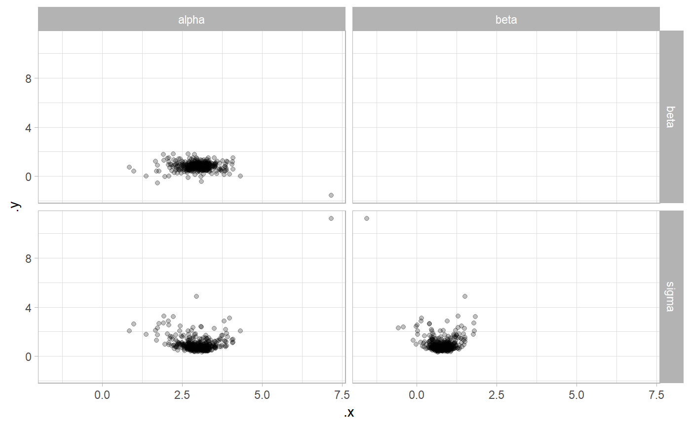
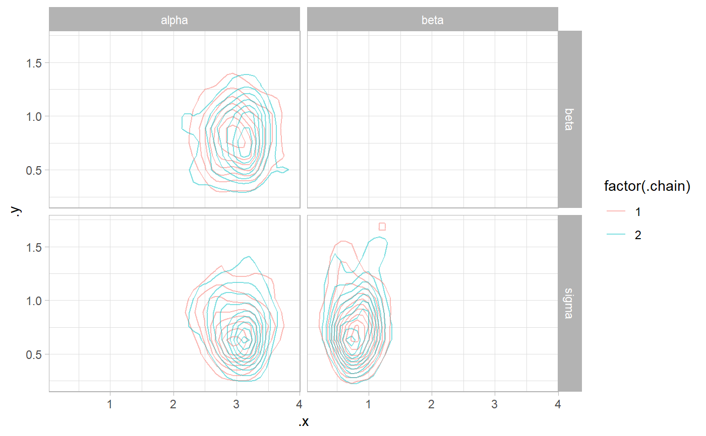

R/gather_pairs.R
gather_pairs.RdFast method for producing combinations of values in a value column for different levels of a key column, assuming long-format (tidy) data with an equal number of values per key. Among other things, this is useful for producing scatter-plot matrices.
gather_pairs(data, key, value, row = ".row", col = ".col", x = ".x", y = ".y", triangle = c("lower only", "upper only", "lower", "upper", "both only", "both"))
| data | Tidy data frame. |
|---|---|
| key | Bare name of column in |
| value | Bare name of column in |
| row | Character vector giving the name of the output column identifying rows in the matrix
of pairs (takes values of |
| col | Character vector giving the name of the output column identifying columns in the matrix
of pairs (takes values of |
| x | Character vector giving the name of the output column with x values in the matrix
of pairs (takes values of |
| y | Character vector giving the name of the output column with y values in the matrix
of pairs (takes values of |
| triangle | Should the upper or lower triangle of the matrix of all possible combinations be returned?
The default, This method is particularly useful for constructing scatterplot matrices. See examples below. |
A tidy data frame of combinations of values in key and value, with columns row
and col (default names ".row" and ".col") containing values from key,
and columns y and x (default names ".y" and ".x") containing values
from value.
library(ggplot2) library(dplyr) t_a = rnorm(100) t_b = rnorm(100, t_a * 2) t_c = rnorm(100) df = rbind( data.frame(g = "a", t = t_a), data.frame(g = "b", t = t_b), data.frame(g = "c", t = t_c) ) df %>% gather_pairs(g, t, row = "g_row", col = "g_col", x = "t_x", y = "t_y") %>% ggplot(aes(t_x, t_y)) + geom_point() + facet_grid(vars(g_row), vars(g_col))df %>% gather_pairs(g, t, triangle = "upper") %>% ggplot(aes(.x, .y)) + geom_point() + facet_grid(vars(.row), vars(.col))df %>% gather_pairs(g, t, triangle = "both") %>% ggplot(aes(.x, .y)) + geom_point() + facet_grid(vars(.row), vars(.col))data(line, package = "coda") line %>% tidy_draws() %>% gather_variables() %>% gather_pairs(.variable, .value) %>% ggplot(aes(.x, .y)) + geom_point(alpha = .25) + facet_grid(vars(.row), vars(.col))line %>% tidy_draws() %>% gather_variables() %>% gather_pairs(.variable, .value) %>% ggplot(aes(.x, .y, color = factor(.chain))) + geom_density_2d(alpha = .5) + facet_grid(vars(.row), vars(.col))